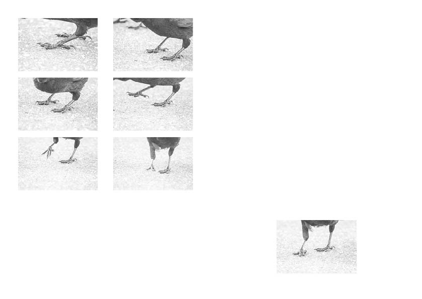
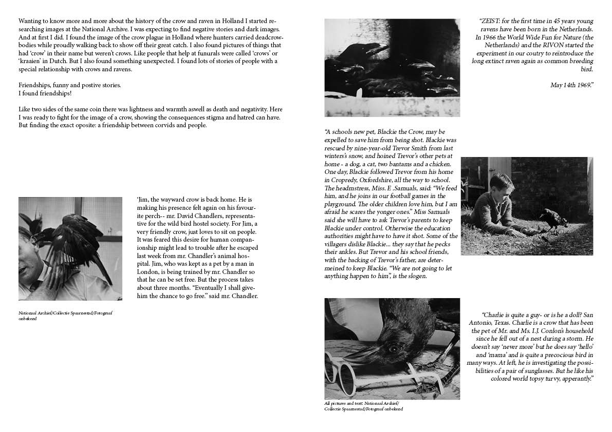

What is there to find out about the blackest bird with the shrillest call?
Being framed by stories we made ourselves, the crow and the raven survived some hard times in history. ‘Death’, ‘solitude’ and ‘scary’ are some words the crow is associated with most, because of what we remember to be true. Our collective memory shaped our view and affected how we react upon that memory. Though, when we start to investigate and try to have a conversation we might end up having a different view on that very thing we framed and discarded before. And even the most unusual friendships could be formed between beings.


@cockroach_collective